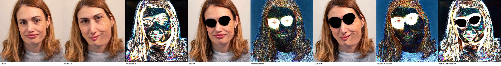
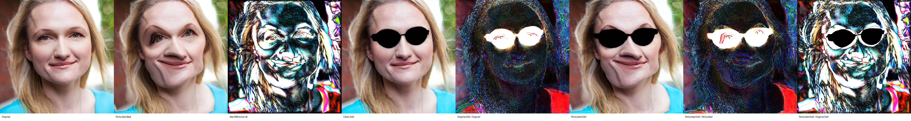
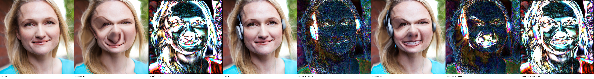
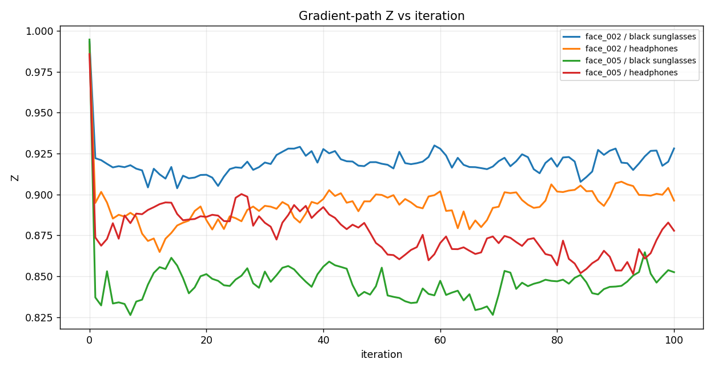
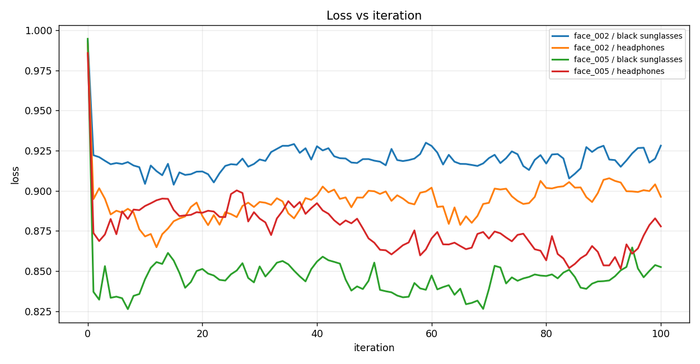
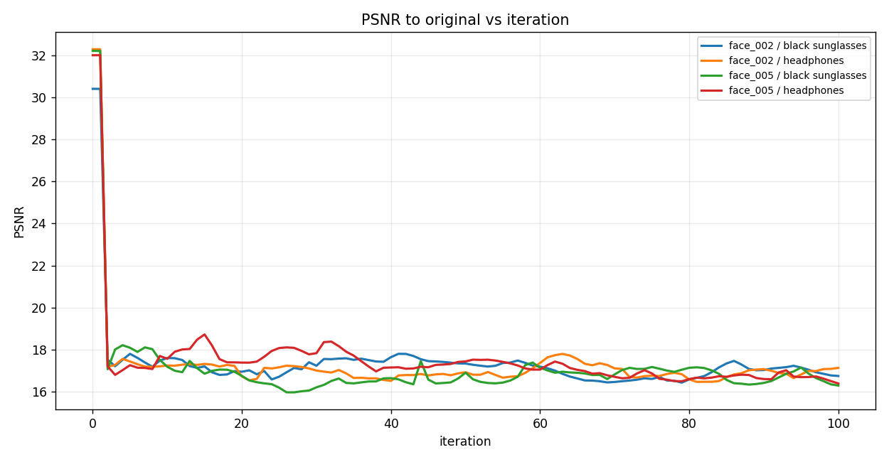
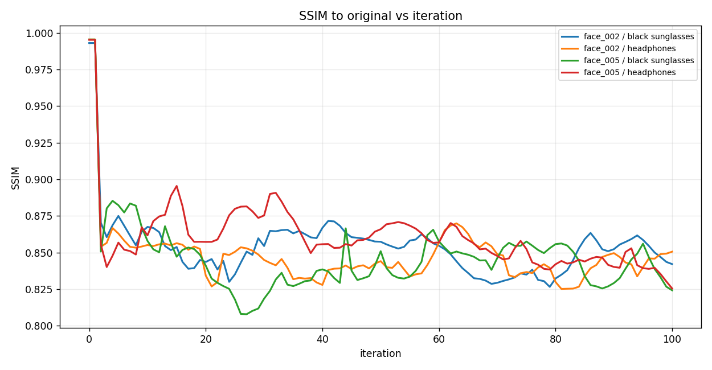
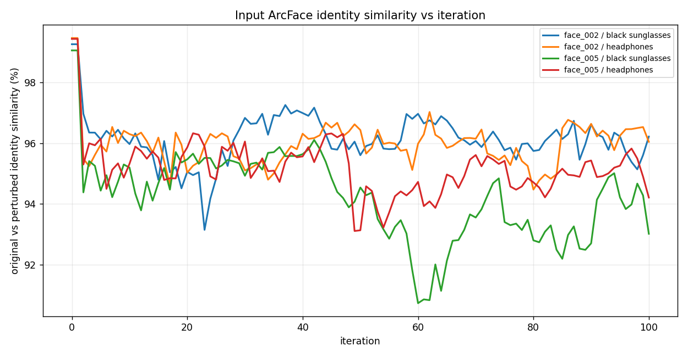
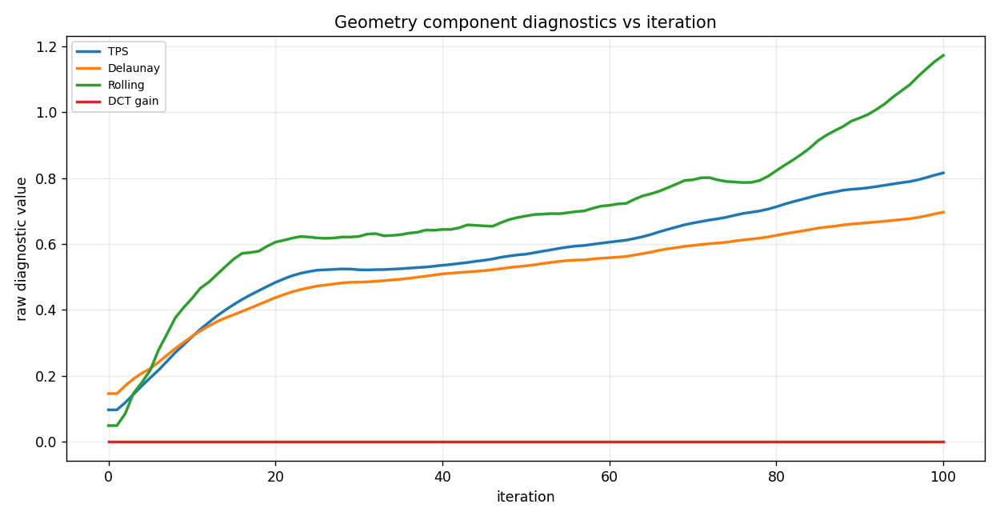

FACE3: Edited-output ArcFace White-box Optimization
Differentiable InstructPix2Pix edit identity results with geometric perturbations
Author: Parth Katiyar
FACE3 optimizes Z = cosine_similarity between frozen ArcFace iResNet-100 embeddings of the clean InstructPix2Pix edit and the perturbed InstructPix2Pix edit. The loss is exactly loss = Z. InstructPix2Pix and ArcFace weights are frozen; only perturbation parameters are optimized. TPS, Delaunay, and rolling are coordinate perturbations. DCT is a blockwise image-frequency coefficient perturbation, not a flow field.
The iteration graph shows the differentiable gradient-path Z used for optimization. Public edited images and stock-public Z values are regenerated at the end with the normal InstructPix2Pix pipeline. Therefore best gradient Z and stock Z at gradient best are intentionally separate columns.
1. Run matrix
Four prompt-labeled cases are retained. The prompt conditions the differentiable InstructPix2Pix edit inside the optimization objective.
| face | prompt | final stock Z | best saved stock Z | best gradient Z | stock Z at gradient best | final edit cosine sim | final edit score % | orig vs orig-edit % | perturbed vs best-edit % | orig vs perturbed % | SSIM | PSNR | edit output SSIM | max disp px | DCT gain mean abs | DCT energy change | fraction clamped | stock public edits |
|---|---|---|---|---|---|---|---|---|---|---|---|---|---|---|---|---|---|---|
| face_002 | add black sunglasses | 0.9645 | 0.9643 | 0.9038 | 0.9643 | 0.9645 | 96.449 | 95.633 | 95.387 | 94.807 | 0.8421 | 16.744 | 0.4516 | 32.006 | 0.0000 | 0.0000 | 0.0281 | 1.0000 |
| face_002 | add headphones | 0.9501 | 0.9501 | 0.8649 | 0.9626 | 0.9501 | 95.012 | 96.261 | 95.722 | 96.347 | 0.8506 | 17.130 | 0.4228 | 38.911 | 0.0000 | 0.0000 | 0.0328 | 1.0000 |
| face_005 | add black sunglasses | 0.9275 | 0.9275 | 0.8263 | 0.9490 | 0.9275 | 92.748 | 94.241 | 94.275 | 94.240 | 0.8242 | 16.288 | 0.5592 | 42.076 | 0.0000 | 0.0000 | 0.0398 | 1.0000 |
| face_005 | add headphones | 0.9299 | 0.9299 | 0.8515 | 0.9532 | 0.9299 | 92.992 | 94.867 | 93.228 | 94.985 | 0.8255 | 16.388 | 0.4802 | 41.903 | 0.0000 | 0.0000 | 0.0375 | 1.0000 |
2. Case image strips
face_002 — add black sunglasses

outputs/edited_output_identity_7/20260710_111718_edited_output_identity_all_sequential/runs/edited_output_identity/instructpix2pix_arcface_iresnet100/face_002__add_black_sunglasses
face_002 — add headphones

outputs/edited_output_identity_7/20260710_111718_edited_output_identity_all_sequential/runs/edited_output_identity/instructpix2pix_arcface_iresnet100/face_002__add_headphones
face_005 — add black sunglasses

outputs/edited_output_identity_7/20260710_111718_edited_output_identity_all_sequential/runs/edited_output_identity/instructpix2pix_arcface_iresnet100/face_005__add_black_sunglasses
face_005 — add headphones

outputs/edited_output_identity_7/20260710_111718_edited_output_identity_all_sequential/runs/edited_output_identity/instructpix2pix_arcface_iresnet100/face_005__add_headphones
3. Graphs
{kind=link}

{kind=link}

{kind=link}

{kind=link}

{kind=link}

{kind=link}
